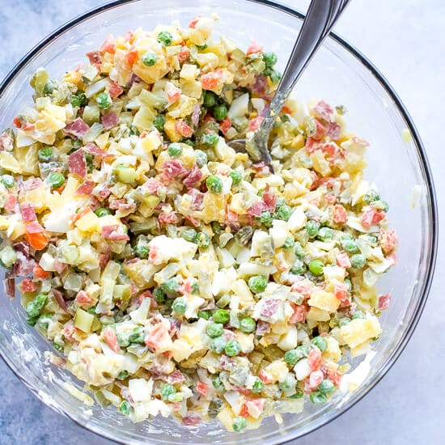

RUSSIAN POTATO SALAD

Description:
This is no ordinary potato salad. This salad consists of potatoes, turkey hot dogs, pickles, scallions, hard-boiled eggs, and sweet peas. All of the ingredients are finely chopped and dressed with mayonnaise.
This salad has been in my family for four generations. Enjoy!
Ingredients
These are the ingredients you'll need to make this russian salad recipe:
- 5 Large Potatoes
- 1 (16 ounce) Package Turkey Hot Dogs
- 5 Eggs
- 5 Large Dill Pickels, Chopped
- 1 Bunch Green Onion, Chopped
- 1 (15 ounce) Can Baby Peas, Drained
- Salt as per taste
- 1 Cup Mayonnaise
Steps
Making Russina salad much easier than it looks. You'll find the full, step-by-step recipe below:
- Place the potatoes in a large pot, and fill with enough water to cover. Bring to a boil, and cook until a fork can be easily inserted and removed, about 20 minutes. Drain and cool slightly.
- During the last 10 minutes, boil the hot dogs and eggs. Drain everything, and set aside to cool.
- Peel the potatoes, and cut into cubes. Chop hot dogs. Place everything in a large bowl, and mix in the pickles, onions and peas
- Peel the eggs, and grate them on top of the salad.
- Add mayonnaise and salt to individual servings.